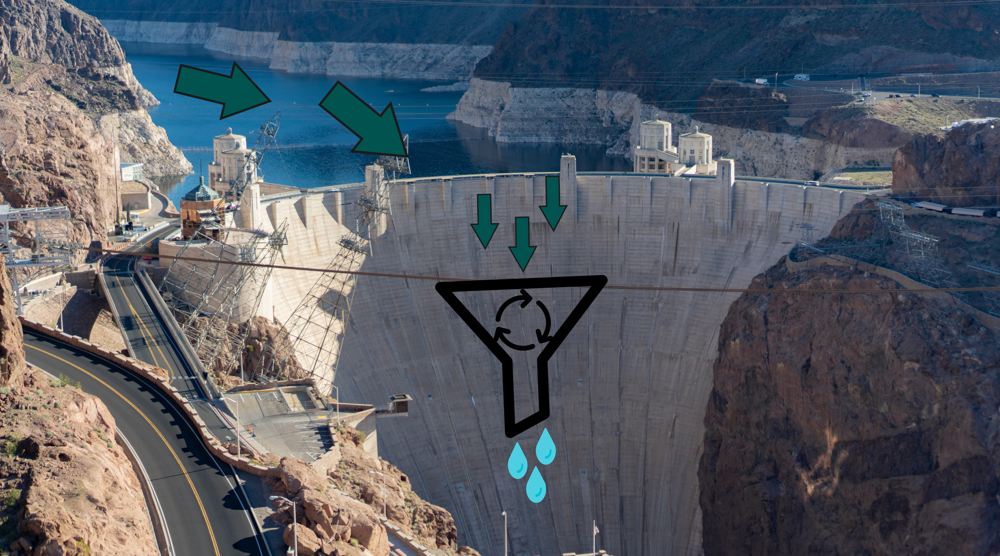

Our flagship for a new and healthier world; The KLEAN filtration system (KFS).
Our aim is that by the year 2030 there will be built and installed at least one KFS in these African countries: Somalia, Uganda, and Congo. These are some of the most water-impoverished countries in the world, and we want them to be the first to experience the future of water filtration systems.
How does the system function?
The system is based on water dams. These KFS are a lot smaller and are placed on multiple parts of a water source with about 5-10km based on the size, and activity around the source of water. The water starts from its original source and runs its course. In its way there are multiple checkpoints, this is where the KFS are. When the water runs through, the water gets rinsed and cleaned, and runs back out. But continuing its way, it will probably run through dirty spots, and get contaminated again. That’s why we have multiple checkpoints where there are stationed KFS to keep the water clean.
This is how it works
The image above is another mockup to show you what our vision is, and what we mean by “the water goes through and gets clean”. To describe short what it does; the water runs into the KFS, inside the KFS there is a big filtration system that filters thousands of liters of water each minute. Here the water is filtered and is let out on the other end clean and ready to go. For clarification, this is a continuous process which means this system will not choke the water source.
This is a huge project that will take years and hard work to accomplish, but we will make sure with your help that this project will succeed. If you ever want to join our team, you can always contact us on mail, or send us a letter. We will answer you as fast as possible. You can find where to contact us either below (laptops and desktop PC) or above (Tablets and phones).